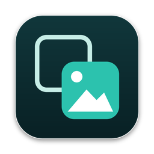

Lookalike
Duplicate, similar and blurry photos, sorted on your Mac
Lookalike lays your duplicates, near-identical takes and blurry photos out side by side, keeps the sharpest shot of every set, and shows you why. It works with the Photos library and with ordinary folders. Nothing is removed until you say so.
Support
Questions, bugs or ideas: email admin@stackedboost.com. You get an answer from the developer, usually within two working days.
Common questions
- Where do removed photos go?
- Photos from the Photos library go to Recently Deleted in the Photos app, where you can restore them for 30 days. Photos from a folder go to the Trash.
- How does Lookalike choose which photo to keep?
- It keeps your favourites first, then the sharpest and largest shot. Move the pointer over the kept photo to compare it with the others in the loupe. Double-click any photo to keep that one instead.
- Does it work with iCloud Photos?
- Yes. Photos stored only in iCloud are fetched in small preview size to compare them, which can take longer the first time.
- Can I use the keyboard?
- Yes. Left and right arrows move between sets, the number keys pick the photo to keep, and K keeps every photo in the set.
- Lookalike says it cannot access my photos.
- Open System Settings, Privacy & Security, Photos, and turn on Lookalike.
- How do I restore Lookalike Pro on another Mac?
- Choose Lookalike, Lookalike Pro in the menu bar, then Restore Purchase, with the same Apple Account you bought it with.